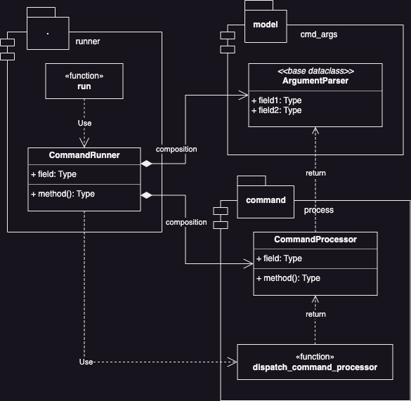
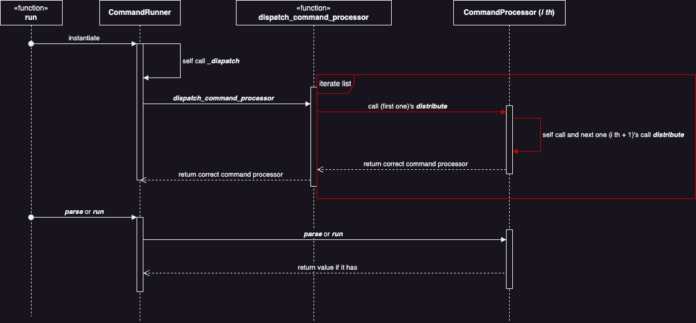
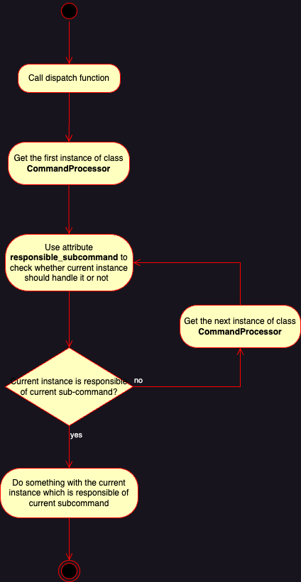
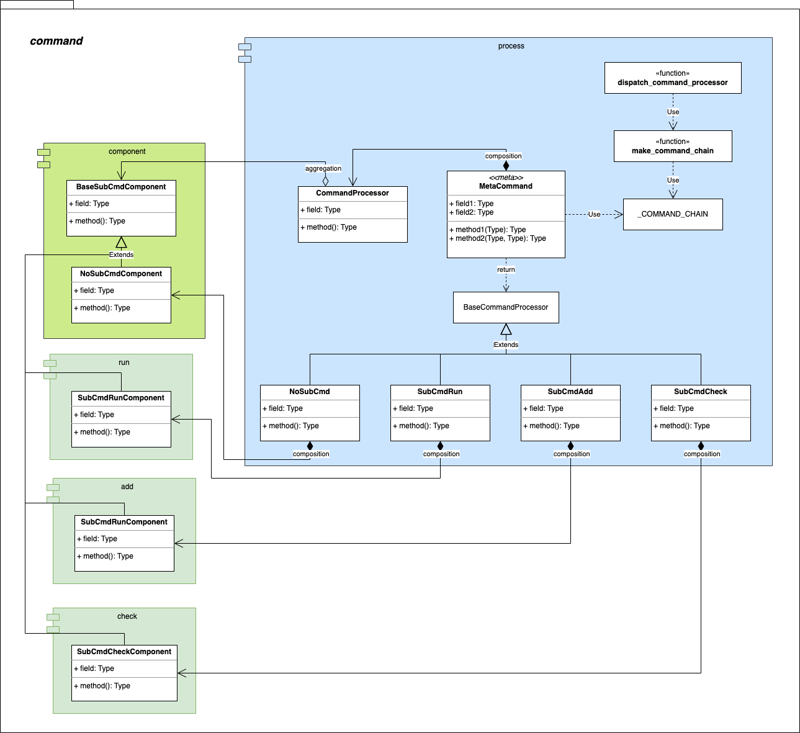
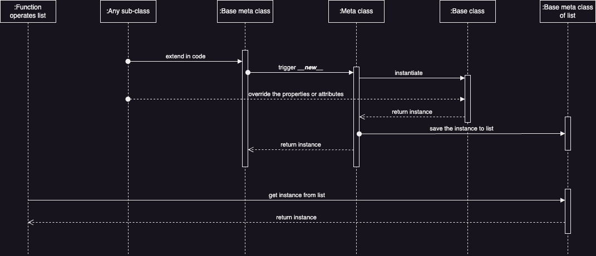
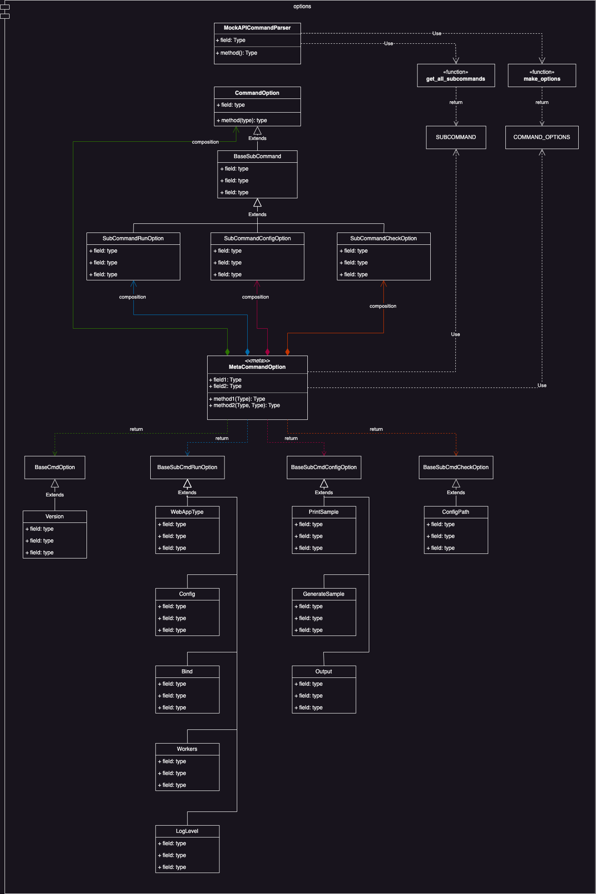
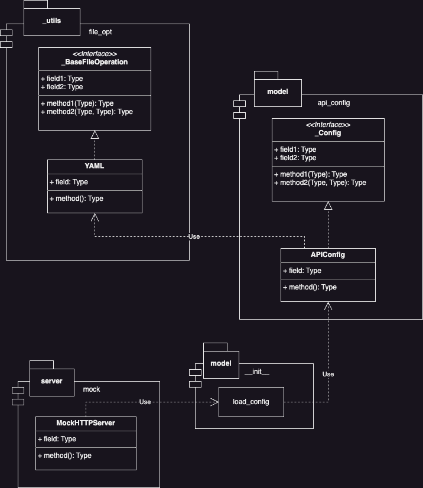
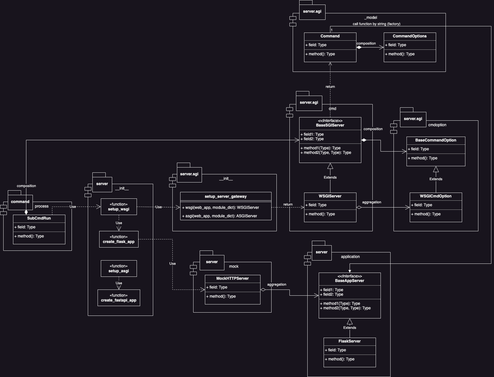

Software architecture¶
Software architecture is very important in a production because it's relative the flexibility and extensibility of the production. So it must have some designs applies to core functions codes.
In PyMock-Server realm, it can divide to several sections to parse its software architecture:
-
Entry point of entire program
- Runner of command line
-
Command line
- Entire command lines
- Entire command line options
-
Features of command line
- Option
--config - The sub-command line
run
- Option
Above all are some parts which have value or more complex to explain their details to developers.
Program entry point - command line runner¶
The entry point of PyMock-Server command line tool. Its actually entry point is calling the function run in module
pymock_api.runner.
UML¶

- About the function which would be run as entry point
run, it's a running logic of objectCommandRunner. - Object
CommandRunnerwould keep instance ofArgumentParserandCommandProcessorto parse command line and run core logic of the current sub-command. - Object
CommandRunnerwould use functiondispatch_command_processorto get the correct instance to handle current command line.
Workflow¶
About workflow of command line runer, it uses 2 types sequence diagram to explain the relationship between different objects and functions.
- Sequence diagram

From the sequence diagram, you could observe that function dispatch_command_processor would keep getting the correct
instances of CommandProcessor to run current command line.
However, how it gets the correct object to process current command line? That's the reason having below activity sequence diagram to explain that:
- Activity sequence diagram for getting
CommandProcessor

In short, function dispatch_command_processor would iterate all instances of CommandProcessor to find the one which
is responsible for current command line.
Now you may have another question: it seems like that it has a CommandProcessor instance of list to let it find. So what
is the list? When does the list would be generated?
The answers of above would be in next section.
Command line features¶
The core implementation of the command line. It would divide 2 sections here:
- Command line processors
- Command line options
Command line processors¶
The logic which would run by the current command line you enter.
All codes belong to here section, they all are responsible for what thing would happen after user run the command line.
UML¶

-
It has 4 base classes:
-
MetaCommandIt's a metaclass for instantiating base class. It would auto-register objects which extends the base class be instantiated from this metaclass to list type protected variable
_COMMAND_CHAIN. -
CommandProcessorIt defines all attributes and functions for subclass to reuse or override to implement customize logic.
-
BaseSubCmdComponentThis is the base class should be extended by all subclasses which is the core running logic implementation of one specific sub-command line. And it also needs to be the return value of property
_subcmd_componentof each subclass which extends base classCommandProcessor. -
BaseCommandProcessorThis is the base class which should be extended by all subclasses. This object be instantiated by metaclass
MetaCommandand general objectCommandProcessor.
-
-
The list be used by function
dispatch_command_processoris protected variable_COMMAND_CHAIN. - All subclasses, i.e.,
NoSubCmd,SubCmdRun, etc., extendBaseCommandProcessorand implement what thing they need to do if user run the command includes returning which component they should use to run the core logic of the sub-command line. - All subclasses, i.e.,
NoSubCmdComponent,SubCmdRunComponent, etc., extendBaseSubCmdComponentand implement the truly core logic of the sub-command line with its options.
The great idea about auto-register refer to source code of project Gunicorn
About the powerful design auto-register which has beautiful extension, it refers to the module config implementation of open source project Gunicorn. Please refer to its source code if you have interesting in it.
Workflow¶
- Sequence diagram

From above sequence diagram, it does auto-registration when initialize an object. It won't do something to iterate all objects and save them to list type object, it automates all things when you add one or more new subclasses which is responsible for new sub-command line.
Extension¶
Here would demonstrate how to add one new sub-command processor in this software architecture.
You'll have 3 things need to do:
- Command line argument
New sub-command line must have options. So you need to define which sub-command line options it has.
# In module pymock_server.model.cmd_args
@dataclass(frozen=True)
class SubcmdNewProcessArguments(ParserArguments):
arg_1: str
- Deserialization
After defining new sub-command line's options, you should define how to deserialize it:
# In module pymock_server.model.cmd_args
class DeserializeParsedArgs:
# ... some code
@classmethod
def subcommand_new_process(cls, args: Namespace) -> SubcmdNewProcessArguments:
return SubcmdNewProcessArguments(
subparser_name=args.subcommand,
arg_1=args.arg_1,
)
And also defining the utility function at module __init__:
# In module pymock_server.model.__init__
class deserialize_args:
# ... some code
@classmethod
def subcmd_new_process(cls, args: Namespace) -> SubcmdNewProcessArguments:
return DeserializeParsedArgs.subcommand_new_process(args)
- SubCommand process
Now, it has sub-command line option data object and deserialization, we could implement what thing it should do.
Here, we have 2 choices to implement:
- Override the function
_rundirectly. - Add new class extends class
BaseSubCmdComponentand implement property_subcmd_component.
Let's demonstrate all way to implement to you and explain their difference.
-
Override the function
_rundirectly.In default, function
_runwould run the sub-command line core logic through the objects in component layer. In the other words, we also could override it directly without implement anything in component layer.-
Pros:
- Decrease the number of class for implementing or maintaining.
- For the simple or easy logic, implement by this way could be more clear and short.
-
Cons:
- For the complex logic or large-scale feature, implement by this way would let the code in this module to be dirty and complex so that developers be more harder to manage or maintain it.
# In module pymock_api.command.process # ... some code class SubCmdNewProcess(BaseCommandProcessor): def _parse_process(self, parser: ArgumentParser, cmd_args: Optional[List[str]] = None) -> SubcmdNewProcessArguments: return deserialize_args.subcmd_new_process(self._parse_cmd_arguments(parser, cmd_args)) def _run(self, args: SubcmdNewProcessArguments) -> None: # Do something ... print(f"This is new sub-command line and get option *arg_1*: {args.arg_1}.") -
-
Add new class extends class
BaseSubCmdComponentand implement property_subcmd_component.Implement and manage the core logic in component layer. And the command.process module only needs to know which component object is responsible of this feature.
-
Pros:
- Decoupling the logics sub-command line processor and core logic of the sub-command line.
- Could be more higher cohesion of the core logic of sub-command line with its options.
- No matter how the sub-command logic complex is, it still could be more easier and maitainable for management.
-
Cons:
- More classes, more management.
- If the core logic is very easy and short, this way is a little laborious.
Implement the core logic in component layer:
# In module pymock_api.command.new_subcmd.component # ... some code class SubCmdNewProcessComponent(BaseSubCmdComponent): def process(self, args: SubcmdNewProcessArguments) -> None: # Do something ... print(f"This is new sub-command line and get option *arg_1*: {args.arg_1}.")Remember that it needs to let command line processor know which component object it should use to run the sub-command line core logic:
# In module pymock_api.command.process # ... some code class SubCmdNewProcess(BaseCommandProcessor): @property def _subcmd_component(self) -> SubCmdRunComponent: return SubCmdNewProcessComponent() def _parse_process(self, parser: ArgumentParser, cmd_args: Optional[List[str]] = None) -> SubcmdNewProcessArguments: return deserialize_args.subcmd_new_process(self._parse_cmd_arguments(parser, cmd_args)) -
We finish all things if we want to extend one new sub-command line! Let's try to run it:
Unfortunately, you would get an error finally. Why? What you miss? Do you remember all the code in this software architecture only process the logic it should run by the current command line? But, how does it parse the command line and its options? So next section would tell you how to add new sub-command line and its options in their software architecture.
Command line options¶
The logic which would parse the current command line and run something for it.
All codes belong to here section, they all are responsible for defining the command line and its options to let argpars understands how to parse the current command line.
UML¶

The software architecture here feature apply is mostly same as previous one section Command line processors.
-
It has 3 base classes:
-
MetaCommandOptionIt's a metaclass for instantiating base class. It would auto-register objects which extends the base class be instantiated from this metaclass to list type data
COMMAND_OPTIONS. If it is sub-command, it also saves sub-command line string to list type dataSUBCOMMAND. -
CommandOption(includes all subclasses ofBaseSubCommand)It defines all attributes and functions for subclass to reuse or override to implement customize logic.
-
BaseCmdOption,BaseSubCmdRunOption, etc.This is the base class which should be extended by all subclasses. This object be instantiated by metaclass
MetaCommandOptionand general objectCommandOption.
-
-
Every sub-command has their own base class. For example, sub-command line
runwithBaseSubCmdRunOption,configwithBaseSubCmdConfigOptionand so on. - The list be used by function
get_all_subcommandsis variableSUBCOMMAND. - The list be used by function
make_optionsis variableCOMMAND_OPTIONS. - All subclasses, i.e.,
VersionextendsBaseCmdOption,WebAppTypeextendsBaseSubCmdRunOption,ConfigPathextendsBaseSubCmdConfigOption, etc., means the specific options under the sub-command line.
Workflow¶
Because the software architecture of here section is mostly same with Command line processors, its workflow also could refer to its workflow.
Extension¶
Here would demonstrate how to extend or add new sub-command feature.
You'll have 4 things:
- Add new attribute of data object SubCommand
Object SubCommand is the standard for PyMock-Server to recognize which sub-command it has. So let's add one new sub-command
line here:
# In module pymock_server.command.options
@dataclass
class SubCommand:
Base: str = "subcommand"
Run: str = "run"
Config: str = "config"
Check: str = "check"
NewProcess: str = "new-ps"
- Implement new class about subcommand
new-ps
Add new class extends base class BaseSubCommand and set value at attribute sub_parser.
# In module pymock_server.command.options
class SubCommandNewProcessOption(BaseSubCommand):
sub_parser: SubParserAttr = SubParserAttr(
name=SubCommand.NewProcess,
help="New subcommand for demonstration,",
)
- Instantiate class with metaclass for subcommand
new-ps
Instantiate a base class for adding options.
# In module pymock_server.command.options
BaseSubCmdNewProcessOption: type = MetaCommandOption("BaseSubCmdNewProcessOption", (SubCommandNewProcessOption,), {})
It would auto-register this sub-command line into SUBCOMMAND. We have sub-command line new-ps, let's add its options.
- Extend the subcommand object to add its option(s)
Add new command option with extending BaseSubCmdNewProcessOption and set needed attributes in it:
# In module pymock_server.command.options
class Arg_1(BaseSubCmdNewProcessOption):
cli_option: str = "--arg-1"
name: str = "arg_1"
help_description: str = "A parameter for demonstration of extending new subcommand and new option."
cli_option: Define the option usage via command line.name: The attribute to get the option value from argpars.help_description: The description would be displayed if you run--help.
Finally, don't forget to let command line process know which sub-command line is its responsibility by overriding the class
attribute responsible_subcommand:
# In module pymock_server.command.process
# ... some code
class SubCmdNewProcess(BaseCommandProcessor):
responsible_subcommand = SubCommand.NewProcess
# ... some code
Now, let's try to run the PyMock-Server with new sub-command:
Congratulation! It works finely as out expect.
SubCommand features¶
The features which be run in each command lines.
Option --config - file operation¶
Here focus on a small part --- a feature of one specific option --config under sub-command run.
UML¶

- Object
MockHTTPServeruses functionload_configto get all detail settings. - Data object
APIConfigprovides function to read and deserialize the configuration file content. - Currently, it only supports parsing YAML file by object
YAML.
Extension¶
Here demonstrate how to extend this feature to parse other file formatter.
- File operation
If you want to use other file formatter, e.g., JSON, you could extend the base class of file operation _BaseFileOperation
to implement needed features.
# In module pymock_server.command.options
# ... some code
class JSON(_BaseFileOperation):
def read(self):
# Read the configuration file content
def write(self, path: str, config: Union[str, dict]) -> None:
# Write data into file
def serialize(self, config: dict) -> str:
# Serialize dat object to string value
Because currently it won't have option in command line to control which way it should use to serialize or deserialize configuration file, so we need to manually modify the code to use it.
# In module pymock_server.model.api_config
class APIConfig(_Config):
"""*The entire configuration*"""
_name: str = ""
_description: str = ""
_apis: Optional[MockAPIs]
_configuration: _BaseFileOperation = JSON()
def __init__(self, name: str = "", description: str = "", apis: Optional[MockAPIs] = None):
self._name = name
# ... some code
Finally, we could use JSON type file as our configuration formatter.
run - web server¶
This is the core feature of PyMock-Server. It does 2 things:
- Set up web application with the API from the detail settings of configuration.
- Run the web application by SGI server.
UML¶

- The sub-command line processor
SubCmdRunwould use functionsetup_wsgiorsetup_asgito run the web application. - All the way to run web application by factory pattern in PyMock-Server.
- The functions as factory callee to set up web application is
create_flask_appandcreate_fastapi_app. - Functions
create_flask_apporcreate_fastapi_appwould use adapterMockHTTPServerto set up all APIs as Python code with Python web framework Flask or FastAPI.
Extension¶
If you have your own customize Python web framework, you also could extend this features by your own one.
Here would demonstrate how to extend it to implement your own web server.
First, the entire web server should be divided to 2 parts:
- Server implementation from Python web framework
- Server gateway interface (a.k.a SGI) server
They mean you should extend all below classes to implement:
-
For setting up web application by generating Python code
BaseAppServer
-
For running web application by SGI server
BaseSGIServerBaseCommandOption
Don't forget it also needs to import the Python web framework into PyMock-Server to let it could generate Python code about APIs with configuration.
- Import web library
2 Things you need to implement: importing the web framework and check importing the web framework.
# In module pymock_server._utils.importing
class import_web_lib:
# Some code ...
@staticmethod
def foo_web_lib() -> "foo_web_lib":
import foo_web_lib
return foo_web_lib
# Some code ...
@staticmethod
def foo_web_lib_ready() -> bool:
return import_web_lib._chk_lib_ready(import_web_lib.foo_web_lib)
Importing way may be different with different web framework
The importing way should be based on how to use the customized Python web framework.
BaseAppServer
Extend the web application feature about how PyMock-Server should set up it? How to initial the web application by the customized Python web framework? How to add new API by the customized web framework?
# In module pymock_server.server.application
class FooWebLibrary(BaseAppServer):
def setup(self) -> "foo_web_lib.Foo":
# How to set up web application instance by this web library
return import_web_lib.foo_web_lib().Foo(__name__)
def _add_api(self, api_name: str, api_config: MockAPI, base_url: Optional[str] = None) -> str:
# How to add API by this web library
return f"""self.web_application.add_web_route(
path="{self.url_path(api_config, base_url)}", methods=["{cast(HTTPRequest, self._ensure_http(api_config, "request")).method}"]
)({api_name})
"""
BaseSGIServer
Implement how to run web application by your own customized Python web framework. In exactly, it just generates a command line with options.
# In module pymock_server.server.sgi.cmd
class FooSGIServer(BaseSGIServer):
def _init_cmd_option(self) -> BaseCommandOption:
return FooWebSGIServerCmdOption()
@property
def entry_point(self) -> str:
return "foonicorn"
BaseCommandOption
Previous one implement the command line entry point, here implement each options how to set it.
# In module pymock_server.server.sgi.cmdoption
class FooWebSGIServerCmdOption(BaseCommandOption):
def bind(self, address: Optional[str] = None, host: Optional[str] = None, port: Optional[str] = None) -> str:
# Set the option about binding the service at one or more specific hosts
if address:
self._is_valid_address(address)
binding_addr = address
elif host and port:
binding_addr = f"{host}:{port}"
else:
raise ValueError("There are 2 ways to pass arguments: using *address* or using *host* and *port*.")
return f"--bind {binding_addr}"
def workers(self, w: int) -> str:
# Set the option about how many workers could handle the requests
return f"--workers {w}"
def log_level(self, level: str) -> str:
# Set the option about log level
return f"--log-level {level}"
Now, we have done the core implementation, then we just leave some utility functions which we need to add.
- Utility function in module
pymock_api.server.sgi.__init__
# In module pymock_server.server.sgi.__init__
class setup_server_gateway:
# Some code ...
@classmethod
def foo(cls, web_app: Union[str, Callable], module_dict: Optional[dict] = None) -> FooSGIServer:
if module_dict:
cls._ensure_function_exists(web_app, module_dict)
return FooSGIServer(app=f"{web_app.__qualname__}()" if isinstance(web_app, Callable) else web_app)
# Some code ...
Please take a look at the code line 10, it's the key line to let SGI server to catch which factory function it should use to generate the web application. Here usage should base on which way should use by your own customized Python web framework.
- Utility function in module
pymock_api.server.__init__
# In module pymock_server.server.__init__
# Some code ...
foo_app: "foo_web_lib.Foo" = None
# Some code ...
def create_foo_app() -> "foo_web_lib.Foo":
load_app.by_foo()
return foo_app
# Some code ...
def setup_foosgi() -> FooSGIServer:
return setup_server_gateway.foo(web_app=create_foo_app, module_dict=globals())
# Some code ...
class load_app:
@classmethod
@ensure_importing(import_web_lib.foo_web_lib)
def by_foo(cls) -> None:
global foo_app
config = cls._get_config_path()
foo_app = cls._initial_mock_server(config_path=config, app_server=FooWebLibrary()).web_app
# Some code ...
The global variable foo_app is the variable which web application instance will be saved at. Function create_foo_app is
the factory function to generate web application. Function setup_foosgi is the one which runs the web application which be
set up by your own customized Python web framework.
- Add option value in one specific function in module
pymock_api.command.process
Finally, we need to add a new value to let option --app-type could recognize and dispatch it to set up and run the web
application by your own customized Python web framework.
# In module pymock_server.command.process
# Some code ...
class SubCmdRun(BaseCommandProcessor):
# Some code ...
def _initial_server_gateway(self, lib: str) -> None:
if re.search(r"auto", lib, re.IGNORECASE):
web_lib = import_web_lib.auto_ready()
if not web_lib:
raise NoValidWebLibrary
self._initial_server_gateway(lib=web_lib)
elif re.search(r"flask", lib, re.IGNORECASE):
self._server_gateway = setup_wsgi()
elif re.search(r"fastapi", lib, re.IGNORECASE):
self._server_gateway = setup_asgi()
elif re.search(r"foo", lib, re.IGNORECASE):
self._server_gateway = setup_foosgi()
else:
raise InvalidAppType
# Some code ...
All things you need to do is done! Let's try to run the command line to test its feature:
If you could keep observing the log message which be generated by web application as you expect, congratulation you extend the feature successfully!